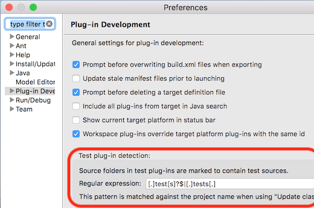
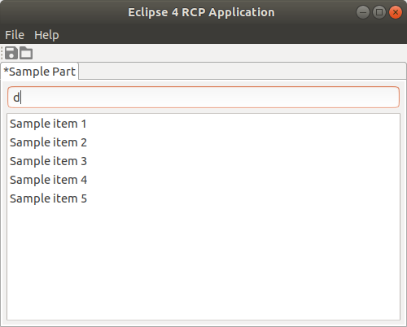
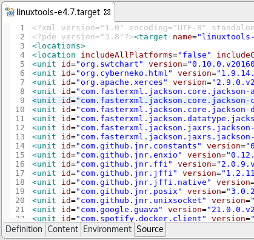
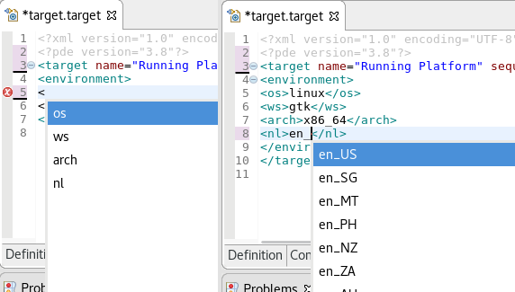
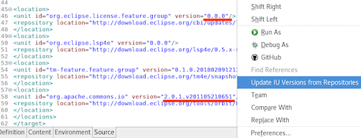
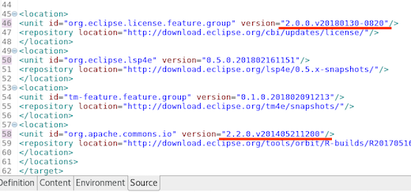
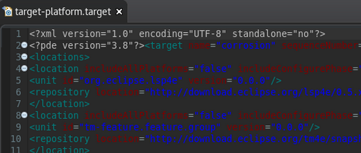
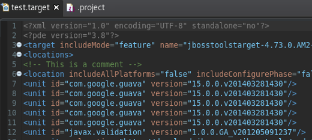
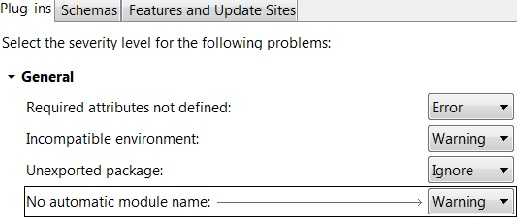
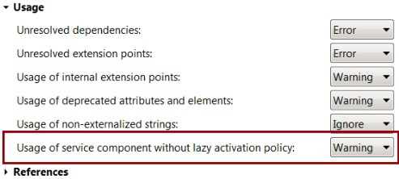

Dialogs, Wizards and Views |
| Launch configuration prototypes for Eclipse Launch Configurations |
A Eclipse Launch Configuration can now be based on a prototype.

A prototype seeds attributes in its associated Eclipse Launch Configurations with the settings specified in the Prototype tab.

Once an Eclipse Launch Configuration has been created, you can override any initial settings from the prototype.
You can also reset the settings of an Eclipse Launch Configuration with the ones from its prototype. An Eclipse Launch Configuration
maintains a link to its prototype, but is a complete stand-alone launch configuration than can be launched, exported, shared, etc.

|
| Test sources |
Source folders in plug-in projects whose project name ends with ".test" or ".tests", or contains ".tests.", are
now marked to contain test sources when using Plug-in Tools > Update Classpath...,
so the related filtering options in various tools can be used.
The exact name matching rule can be configured as a regular expression in Preference > Plug-In Development in the group Test plug-in detection. Setting it to an empty value disables this mechanism.

|
| PDE detects and configures folders as projects during import |
When using the import wizard from File > Open Projects from Filesystem... or File > Import... > General > Projects from Folder or Archive, PDE detects
folders that can be turned into PDE projects (i.e, folders which contain a META-INF/MANIFEST.MF or a feature.xml) and configures them accordingly.
Note that the folders already configured as Eclipse projects (already containing a .project file) will be imported "as is" and won't be reconfigured by PDE.
|
| PDE handles generic bundle requirements/capabilities |
PDE now handles dependencies described by the
Require-Capability and Provide-Capability manifest headers.
These dependencies are taken into account additionally when computing the required bundles for a selected set of bundles
from the target platform.
The most noticeable place where this feature is available is in the Eclipse launch configuration page
i.e. Eclipse launch configuration -> Plug-ins -> Add Required Plug-ins.
For example, a usual effect is that the plug-in org.apache.felix.scr with the
dropdown "Launch With: plug-ins selected below" selected on Plug-ins tab
will be additionally selected by the action. This plug-in declares Provide-Capability: osgi.extender, which
is consumed as Require-Capability: osgi.extender by some plug-ins.
Further the computation of required plug-ins is performed recursively now until added plug-ins do not introduce more
transitive requirements.
|
| New icons for the Eclipse 4 RCP template |
The Eclipse 4 RCP Application template has been updated to use material design like icons.

|
Editors |
| Source tab added to target definition editor |
Within the current default Target Definition Editor,
a Source tab has been added which contains the extension based text editor's Target Definition Editor.
The editor is concurrent with the other tabs and the update made will be mirrored between the tabs.

|
| Support for environment argument tags in generic editor |
For the target files, highlighting and auto-complete are supported for environment argument tags in Generic Text Editor and the Target Editor Source tab.

|
| Command to update IU versions |
The right-click context menu within .target file source editors now contains a new Update IU Versions from Repositories command to update the version attribute of all units to the newest available version.
Before:

After:

|
| Improved coloring of the target file editor in the dark theme |
The text colors for .target file source editors have been updated to be more legible in the dark theme.
Before:

After:

|
PDE Compiler |
| PDE compiler reports absence of Automatic-Module-Name |
A Manifest builder warning is reported on the manifest file if there is no Automatic-Module-Name header in it
(required for compatibility in a Java modular setup - Java 9 or later). The quickfix for this problem is to add an Automatic-Module-Name with the same
name as Bundle-SymbolicName. For a newly created plugin project, this is added
automatically.
On the Plug-in Development > Compilers preference page in the
Plug-ins tab, there is a new option in the General section to control
the severity of this issue.

|
| New option to control PDE compiler warning |
There is an option to control the PDE compiler issue "Bundles with a Service-Component should set the Bundle-ActivationPolicy to lazy."
By default, this is set to warning.

|